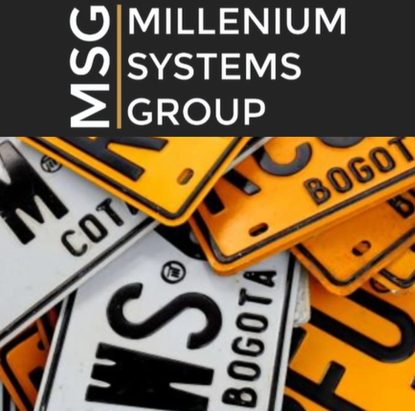
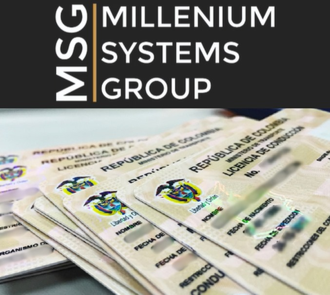
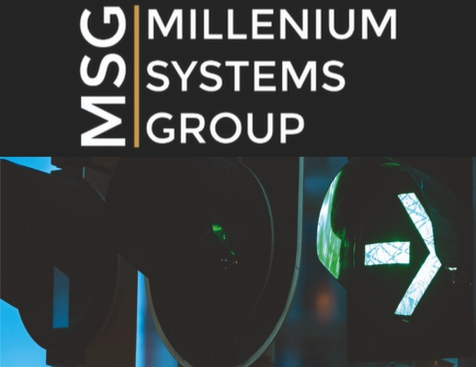

Brindamos servicios y soluciones especializadas en materia de transito y transporte a organismos territoriales y usuarios finales, apoyando la gestion en el manejo administrativo, financiero, humano y operativo de los diferentes organismos de transito a nivel municipal, departamental y facilitando a nuestros clientes finales agilidad, oportunidad y satisfaccion en sus tramites.
- 
- - MATRICULAS
- - DERECHOS DE TRANSITO
- - IMPUESTOS NACIONALES
- - IMPUESTOS DEPARTAMENTALES
- - TRAMITES HUNT
- - TRASLADO DE CUENTAS
- - PARQUE AUTOMOTOR LOCAL
- 
- - LEGALIZACION DE CONDUCTORES MUNICIPALES
- - EXPEDICION INICIAL
- - REFRENDACION O RENOVACION
- - DUPLICADOS
- 
- - SEMAFORIZACION MUNICIPAL
- - EN PUNTOS CRITICOS
- - PREVENCION PEATONAL
- - SENDEROS DE CICLORUTA